Applications I: Simulated Data Sets
Jonathon Chow
2022-09-30
Source:vignettes/10_application_simu.Rmd
10_application_simu.RmdIntroduction
To evaluate the performance of the different learning algorithms, we generated two groups of simulated genotype data sets. In simulated data set A, we focus on the influence of the strength of population structure and the choice of parameter K on the performance of different algorithms. In simulated data set B, we focus on the performance of different algorithms when the mixing ratio gap between different individuals is small.
Simulated Data Set A
Generate the data set
We generated the simulated data set A (Raj, Stephens, and Pritchard 2014) in three steps. First, generate the population scale matrix \(P\) using the Dirichlet distribution; In the second step, the gene scale matrix \(F\) is generated using beta distribution. The third step is to generate the genotype matrix \(G\) using the binomial distribution. We set the number of individuals \(I\) to 600, the number of SNPs \(J\) to 2500, and the number of populations \(K\) to 3.
Step 1. The population scales for each sample are drawn from a symmetric Dirichlet distribution to simulate small amounts of gene flow between the three populations. Here we use \(Dirichlet(\frac{1}{10}\textbf{1}_3)\), of course, in the implementation code, we can adjust the parameters of the Dirichlet distribution.
Step 2. The ancestral allele frequencies \(\bar{f_j}\) for each SNP are drawn from a natural data set to simulate allele frequencies in natural populations. Here we use the HGDP data set. First, \(\bar{f_j}\) is equal to the total number of suballeles observed at the \(j\)th SNP divided by twice the number of individuals. Then, we assume that the samples are drawn from a three-population demographic model. The edge weights correspond to the parameter \(F_k\) (Wright 1949) 1 in the model that quantifies the genetic drift of each of the three current populations from an ancestral population. Here we choose \((F_1,F_2,F_3)=(0.1,0.05,0.01)\) to simulate strong structure and \((F_1,F_2,F_3)=0.5\times(0.1,0.05,0.01)\) to simulate weak structure. Thus, the allele frequency at a given locus for each population is drawn from a beta distribution (Balding and Nichols 1995) \(f_{kj}\sim Beta\Big(\frac{1-F_k}{F_k}\bar{f_j},\frac{1-F_k}{F_k}(1-\bar{f_j})\Big)\).
Step 3. According to the PSD model, each element \(g_{ij}\) of the matrix \(G\) follows a binomial distribution with probability \((PF)_{ij}=\sum_{i=1}^Kp_{ik}f_{kj}\) and number of trials 2.
Fit the data
We use the function psd_simulation in package AwesomePackage directly.
data_simuA_strong <- psd_simulation(600, 2500, 3, type.id = "A",
parm_F = c(0.1, 0.05, 0.01))
data_simuA_weak <- psd_simulation(600, 2500, 3, type.id = "A",
parm_F = 0.5 * c(0.1, 0.05, 0.01)) We use different algorithms and different K to fit strong and weak structure data sets respectively.
result_simuA_strong_em_K3 <- psd_fit_em(data_simuA_strong$G, 3, 1e-5, 2000)
# [===============>-----------------------------------------------] 520/2000 (44s)
result_simuA_strong_em_K5 <- psd_fit_em(data_simuA_strong$G, 5, 1e-5, 2000)
# [=================>---------------------------------------------] 580/2000 ( 2m)
result_simuA_strong_sqp_K3 <- psd_fit_sqp(data_simuA_strong$G, 3, 1e-5, 200, 200)
# [================================================================] 200/200 (17s)
# [=========>-------------------------------------------------------] 30/200 (17s)
result_simuA_strong_sqp_K5 <- psd_fit_sqp(data_simuA_strong$G, 5, 1e-5, 200, 200)
# [================================================================] 200/200 (37s)
# [===============>-------------------------------------------------] 50/200 ( 1m)
result_simuA_strong_vi_K3 <- psd_fit_vi(data_simuA_strong$G, 3, 1e-5, 2000)
# [===================>-------------------------------------------] 650/2000 (39s)
result_simuA_strong_vi_K5 <- psd_fit_vi(data_simuA_strong$G, 5, 1e-5, 2000)
# [================================>-----------------------------] 1070/2000 ( 1m)
result_simuA_strong_svi_K3 <- psd_fit_svi(data_simuA_strong$G, 3,
1e-5, 5e+5, 1e+4, 3,
100, 2000,
5e-2, 1e-1,
1, 0.5)
# [==============>--------------------------------------------] 130000/5e+05 (13m)
result_simuA_strong_svi_K5 <- psd_fit_svi(data_simuA_strong$G, 5,
1e-5, 5e+5, 1e+4, 3,
100, 2000,
5e-2, 1e-1,
1, 0.5)
# [=============>---------------------------------------------] 120000/5e+05 (12m)
result_simuA_weak_em_K3 <- psd_fit_em(data_simuA_weak$G, 3, 1e-5, 2000)
# [====================>------------------------------------------] 660/2000 ( 1m)
result_simuA_weak_em_K5 <- psd_fit_em(data_simuA_weak$G, 5, 1e-5, 2000)
# [==================>--------------------------------------------] 610/2000 ( 2m)
result_simuA_weak_sqp_K3 <- psd_fit_sqp(data_simuA_weak$G, 3, 1e-5, 200, 200)
# [================================================================] 200/200 (18s)
# [===============>-------------------------------------------------] 50/200 (28s)
result_simuA_weak_sqp_K5 <- psd_fit_sqp(data_simuA_weak$G, 5, 1e-5, 200, 200)
# [================================================================] 200/200 (39s)
# [===============>-------------------------------------------------] 50/200 ( 1m)
result_simuA_weak_vi_K3 <- psd_fit_vi(data_simuA_weak$G, 3, 1e-5, 2000)
# [=====================>-----------------------------------------] 710/2000 (46s)
result_simuA_weak_vi_K5 <- psd_fit_vi(data_simuA_weak$G, 5, 1e-5, 2000)
# [=======================================================>------] 1810/2000 ( 2m)
result_simuA_weak_svi_K3 <- psd_fit_svi(data_simuA_weak$G, 3,
1e-5, 5e+5, 1e+4, 3,
100, 2000,
5e-2, 1e-1,
1, 0.5)
# [=======================>------------------------------------] 2e+05/5e+05 (19m)
result_simuA_weak_svi_K5 <- psd_fit_svi(data_simuA_weak$G, 5,
1e-5, 5e+5, 1e+4, 3,
100, 2000,
5e-2, 1e-1,
1, 0.5)
# [==================>----------------------------------------] 160000/5e+05 (19m) We store the result as result_simuA.RData.
Results
We import the data directly.
load(system.file("extdata", "result_simuA.RData", package = "AwesomePackage", mustWork = TRUE))
plot_structure(data_simuA_strong$P, pops = c(1,2,3),
title = "Data Set: simuA (strong) | Method: REAL | K: 3")
plot_structure(result_simuA_strong_em_K3$P, pops = c(3,1,2),
title = "Data Set: simuA (strong) | Method: EM | K: 3")
plot_structure(result_simuA_strong_sqp_K3$P, pops = c(2,3,1),
title = "Data Set: simuA (strong) | Method: SQP | K: 3")
plot_structure(result_simuA_strong_vi_K3$P, pops = c(1,3,2),
title = "Data Set: simuA (strong) | Method: VI | K: 3")
plot_structure(result_simuA_strong_svi_K3$P, pops = c(2,1,3),
title = "Data Set: simuA (strong) | Method: SVI | K: 3")
plot_structure(result_simuA_strong_em_K5$P, pops = c(2,1,4,5,3),
title = "Data Set: simuA (strong) | Method: EM | K: 5")
plot_structure(result_simuA_strong_sqp_K5$P, pops = c(5,1,2,4,3),
title = "Data Set: simuA (strong) | Method: SQP | K: 5")
plot_structure(result_simuA_strong_vi_K5$P, pops = c(4,2,3,1,5),
title = "Data Set: simuA (strong) | Method: VI | K: 5")
plot_structure(result_simuA_strong_svi_K5$P, pops = c(4,5,1,2,3),
title = "Data Set: simuA (strong) | Method: SVI | K: 5")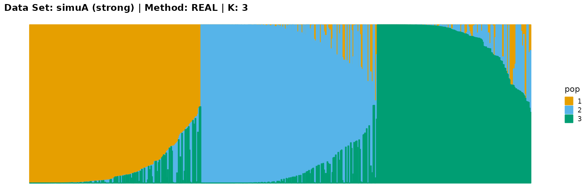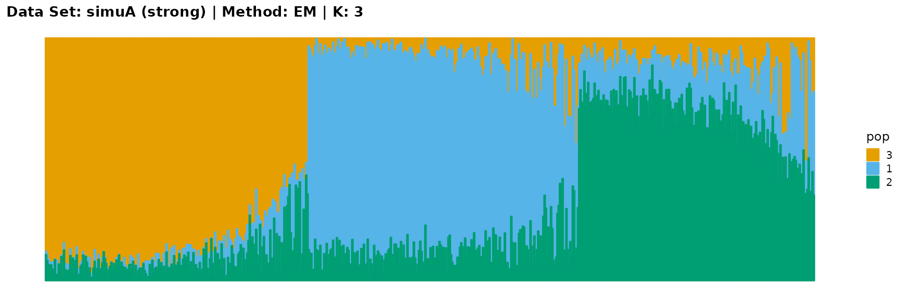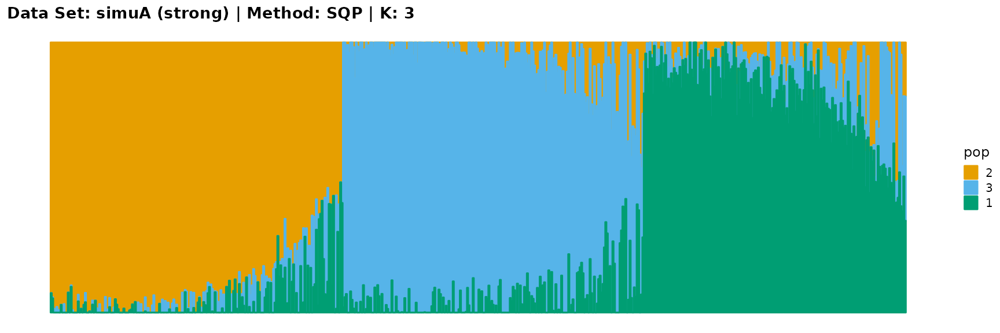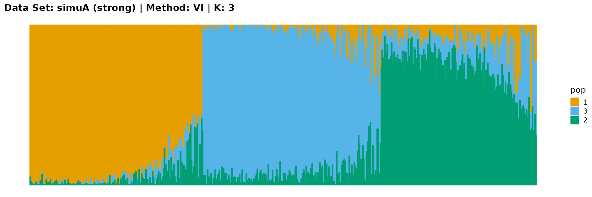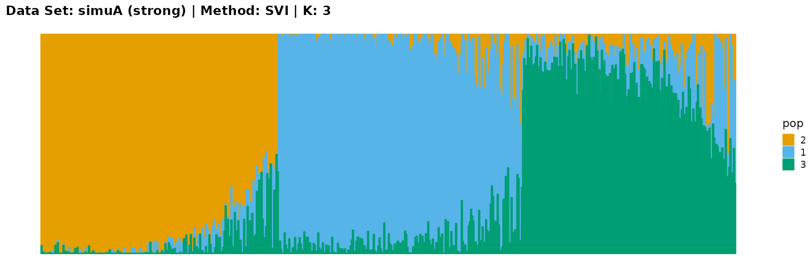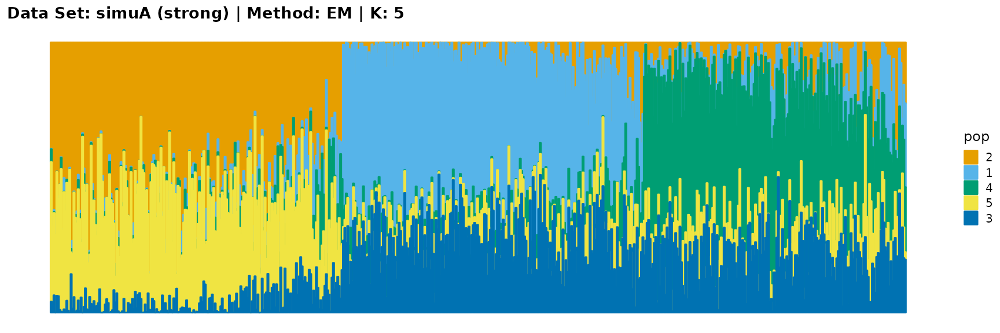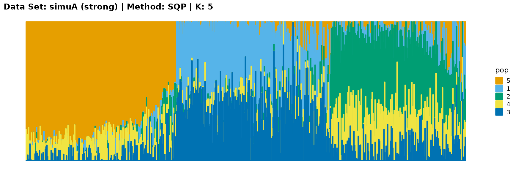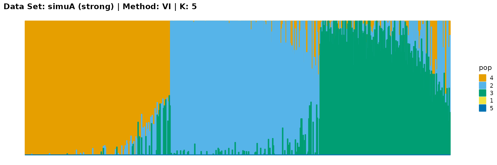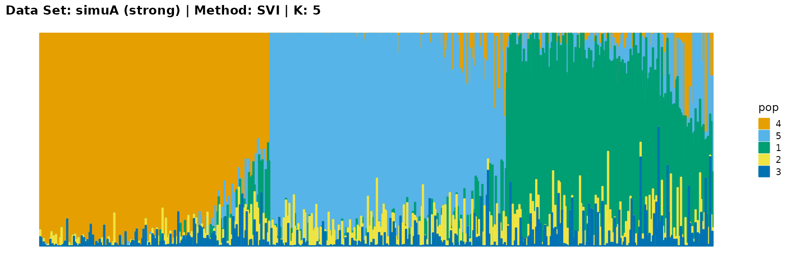
plot_structure(data_simuA_weak$P, pops = c(1,2,3),
title = "Data Set: simuA (weak) | Method: REAL | K: 3")
plot_structure(result_simuA_weak_em_K3$P, pops = c(3,1,2),
title = "Data Set: simuA (weak) | Method: EM | K: 3")
plot_structure(result_simuA_weak_sqp_K3$P, pops = c(1,3,2),
title = "Data Set: simuA (weak) | Method: SQP | K: 3")
plot_structure(result_simuA_weak_vi_K3$P, pops = c(1,2,3),
title = "Data Set: simuA (weak) | Method: VI | K: 3")
plot_structure(result_simuA_weak_svi_K3$P, pops = c(1,2,3),
title = "Data Set: simuA (weak) | Method: SVI | K: 3")
plot_structure(result_simuA_weak_em_K5$P, pops = c(4,3,1,2,5),
title = "Data Set: simuA (weak) | Method: EM | K: 5")
plot_structure(result_simuA_weak_sqp_K5$P, pops = c(1,3,4,2,5),
title = "Data Set: simuA (weak) | Method: SQP | K: 5")
plot_structure(result_simuA_weak_vi_K5$P, pops = c(2,5,4,1,3),
title = "Data Set: simuA (weak) | Method: VI | K: 5")
plot_structure(result_simuA_weak_svi_K5$P, pops = c(3,1,2,4,5),
title = "Data Set: simuA (weak) | Method: SVI | K: 5")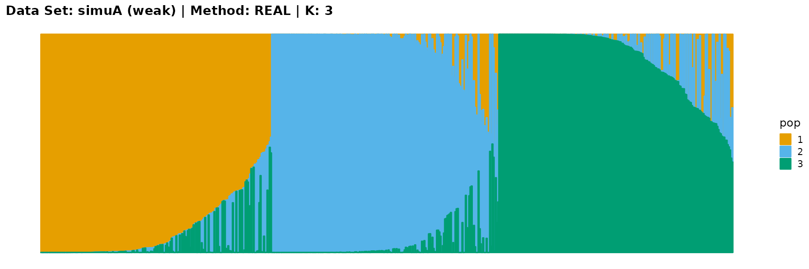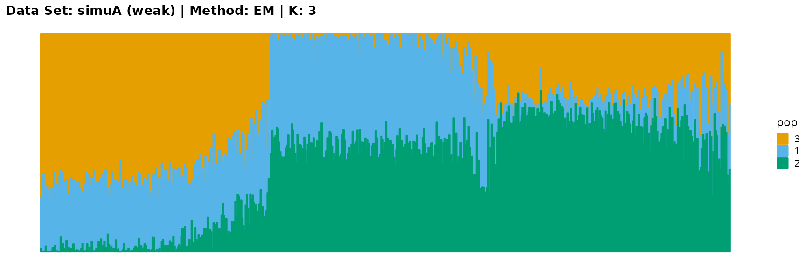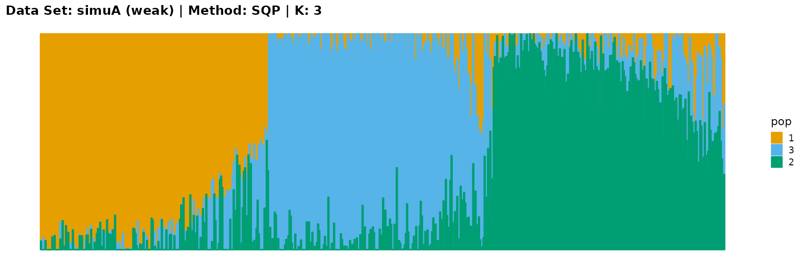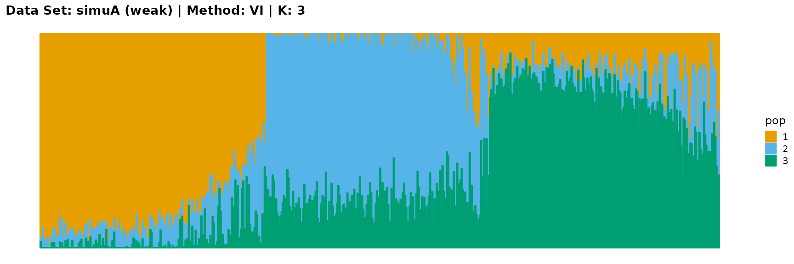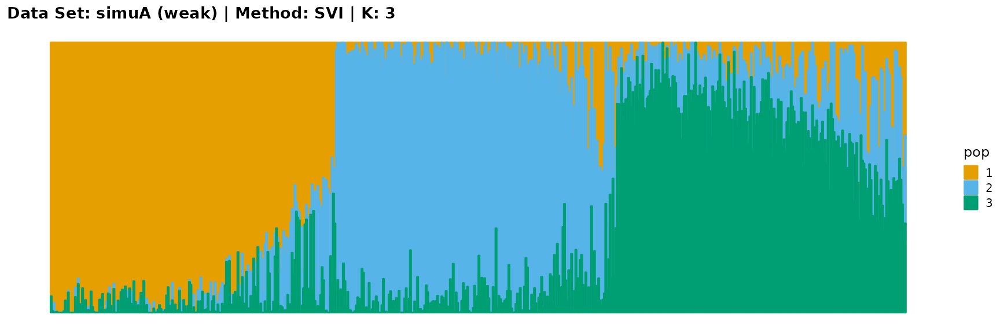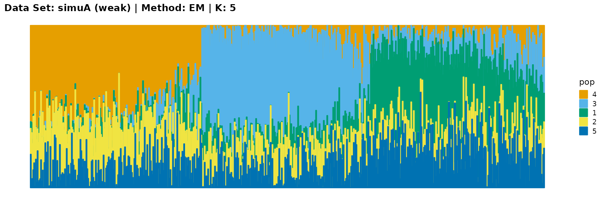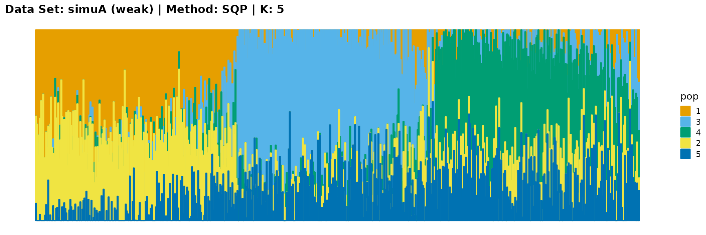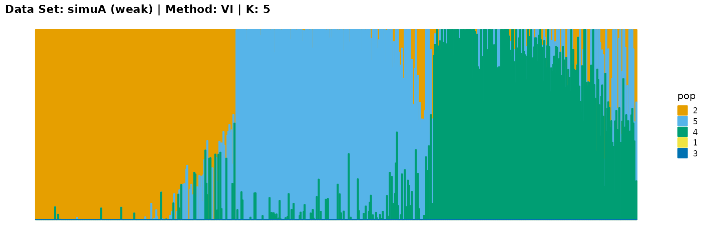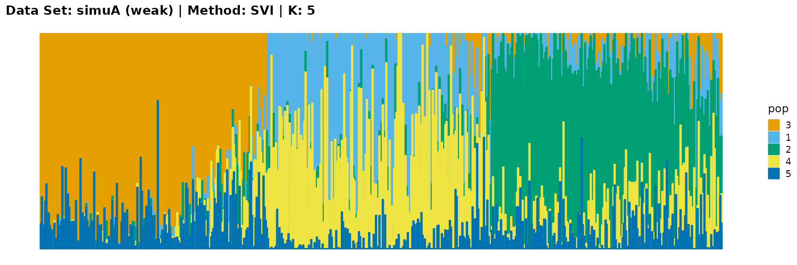
Discussion
The main purpose of simulated data set A is to study the influence of the strength of population structure and the choice of parameter K on the performance of different algorithms.
For EM and SQP algorithms, they tend to reveal details, that is, they are sensitive to parameter K and structure strength. With the appropriate parameter K, this may be an advantage, as it reveals a finer structure. However, when the parameter K is too large, the phenomenon of overfitting is easy to occur. In addition, SQP algorithm is more accurate than EM algorithm.
For the VI algorithm, we notice that the results of VI are almost consistent for both parameter K and structure strength changes. This means that the VI algorithm only tends to reveal the main factors, thereby ignoring some smaller contributions. This is both a strength and a weakness.
The SVI algorithm is an ideal choice in many cases, because it can both highlight the main parts like VI, and react acutely when the structure is not obvious like EM and SQP.
Simulated Data Set B
Generate the data set
We also use three steps to generate simulated data set B. In the second step, we set all \(F_k\) to 0.1. The third step is the same as for data set A. We just consider the first step. We set a Gaussian density for each ancestral population centered at its location and normalizing each individual such that all proportions sum to 1 (Gopalan et al. 2016). In this case, each ancestral population is placed at a location evenly spaced along a line. Individuals are also positioned evenly on the line, and their proportions \(p_{ik}\) are a function of their proximity to each population’s location. We set the number of individuals \(I\) to 1000, the number of SNPs \(J\) to 5000, and the number of populations \(K\) to 5.
Fit the data
We use the function psd_simulation in package AwesomePackage directly.
data_simuB <- psd_simulation(1000, 5000, 5, type.id = "B") We use different algorithms and different K to fit the data set.
result_simuB_em_K3 <- psd_fit_em(data_simuB$G, 3, 1e-5, 2000)
# [=========>-----------------------------------------------------] 330/2000 ( 2m)
result_simuB_em_K5 <- psd_fit_em(data_simuB$G, 5, 1e-5, 2000)
# [==============>------------------------------------------------] 480/2000 ( 5m)
result_simuB_sqp_K3 <- psd_fit_sqp(data_simuB$G, 3, 1e-5, 200, 200)
# [================================================================] 200/200 ( 1m)
# [============>----------------------------------------------------] 40/200 ( 1m)
result_simuB_sqp_K5 <- psd_fit_sqp(data_simuB$G, 5, 1e-5, 200, 200)
# [================================================================] 200/200 ( 2m)
# [===================>---------------------------------------------] 60/200 ( 5m)
result_simuB_vi_K3 <- psd_fit_vi(data_simuB$G, 3, 1e-5, 2000)
# [============>--------------------------------------------------] 400/2000 ( 1m)
result_simuB_vi_K5 <- psd_fit_vi(data_simuB$G, 5, 1e-5, 2000)
# [=======================>---------------------------------------] 770/2000 ( 3m)
result_simuB_svi_K3 <- psd_fit_svi(data_simuB$G, 3,
1e-5, 5e+5, 1e+4, 3,
100, 2000,
5e-2, 1e-1,
1, 0.5)
# [============>----------------------------------------------] 110000/5e+05 (13m)
result_simuB_svi_K5 <- psd_fit_svi(data_simuB$G, 5,
1e-5, 5e+5, 1e+4, 3,
100, 2000,
5e-2, 1e-1,
1, 0.5)
# [================>------------------------------------------] 140000/5e+05 (20m) We store the result as result_simuB.RData.
Results
We import the data directly.
load(system.file("extdata", "result_simuB.RData", package = "AwesomePackage", mustWork = TRUE))
plot_structure(data_simuB$P, pops = c(5,4,3,2,1),
title = "Data Set: simuB | Method: REAL | K: 5")
plot_structure(result_simuB_em_K3$P, pops = c(3,1,2),
title = "Data Set: simuB | Method: EM | K: 3")
plot_structure(result_simuB_sqp_K3$P, pops = c(2,1,3),
title = "Data Set: simuB | Method: SQP | K: 3")
plot_structure(result_simuB_vi_K3$P, pops = c(1,3,2),
title = "Data Set: simuB | Method: VI | K: 3")
plot_structure(result_simuB_svi_K3$P, pops = c(1,2,3),
title = "Data Set: simuB | Method: SVI | K: 3")
plot_structure(result_simuB_em_K5$P, pops = c(1,3,5,2,4),
title = "Data Set: simuB | Method: EM | K: 5")
plot_structure(result_simuB_sqp_K5$P, pops = c(2,5,4,3,1),
title = "Data Set: simuB | Method: SQP | K: 5")
plot_structure(result_simuB_vi_K5$P, pops = c(4,3,2,5,1),
title = "Data Set: simuB | Method: VI | K: 5")
plot_structure(result_simuB_svi_K5$P, pops = c(4,2,5,3,1),
title = "Data Set: simuB | Method: SVI | K: 5")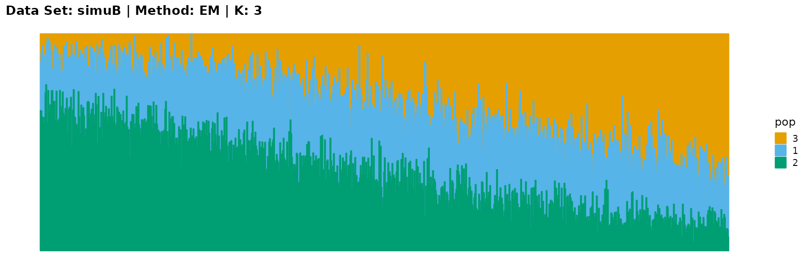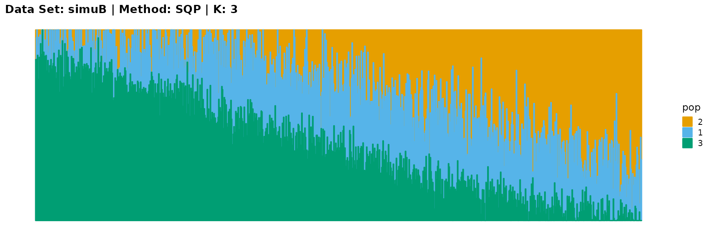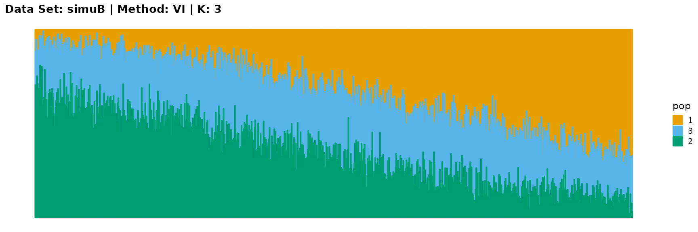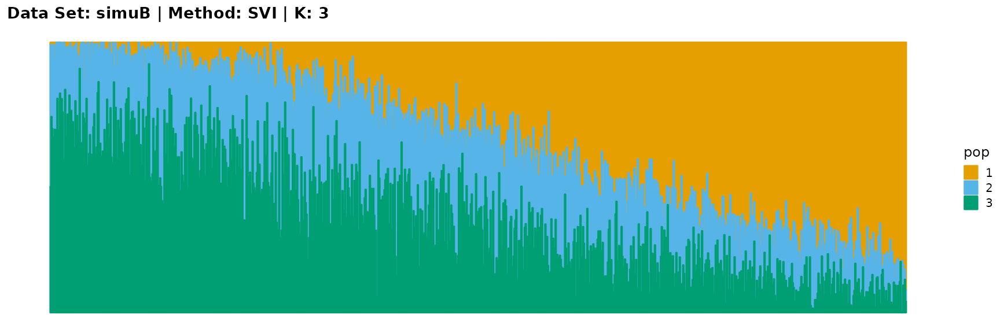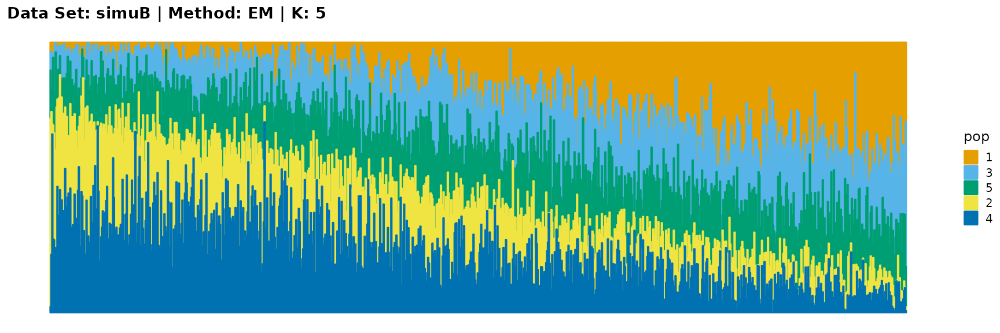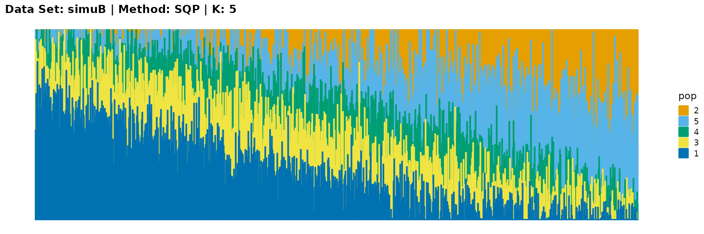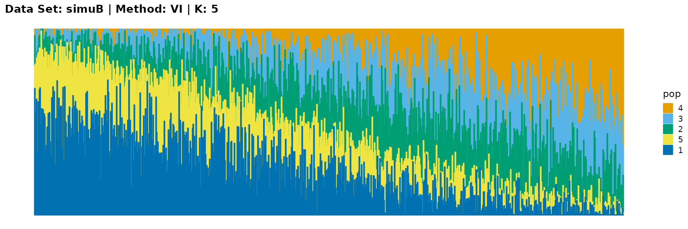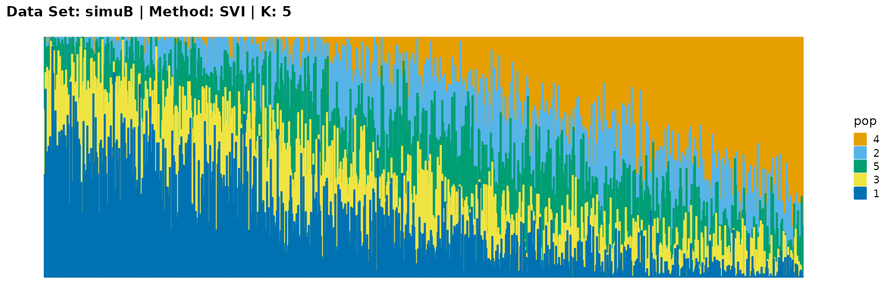
Discussion
The main purpose of simulated data set B is to study the performance of different algorithms when the mixing ratio gap between different individuals is small. In this case, EM algorithm and SQP algorithm can more faithfully reflect the structure of the dataset (the former is better), while VI algorithm and SVI algorithm will overemphasize some features (the former is worse).